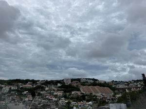
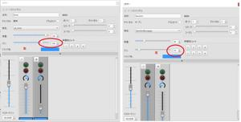

うるがいの話 ある日
最新: ＭＵＳＥＳＣＯＲＥ３ミキサーでのパンの設定【うるがいの話 ある日】とは 一日だけのプログです
『うるがいの話』の最新一日だけのプログで、通信料が少なく経済的だ。カニの画像をクリックすると全ての日付が載る『うるがいの話』サイトを表示します
|
|
【うるがいの話】 うるがい(ｳﾙｶﾞｲ urugai)とは、『もずくがに』の名前でとても大きくなります。 |
|---|---|
|
|
【カミマヤーの話】 猫のことを方言でマヤーといいます。カミマヤー（kamimayaa）とは、神の猫のことです。 |
|
【たながぁの音楽】 たながぁ（ﾀﾅｶﾞｰ tanagaa）とは手長えびのことで、何種類かあり大きいのは車 エビぐらいになります。 |

|
【ぶながぁの話】 ぶながぁ(ﾌﾞﾅｶﾞｰ bunagaa)とは、赤い髪の毛、赤い身体、そして身長は１ｍ２０ｃｍ ぐらい、川の蟹を食べているの目撃された。場所は沖縄県国頭郡大宜味村のと ある村僕の隣近所に住んでいる爺さんから、聞いた話です。 |
|
|
【ギーマの話】 ギーマ(giima)とは、山原の里山に咲くスズランに似た、 花を付けます。実は食べられます、 気が付くと口の周りが紫になっています。 |
2023年06月10日 (土）ＭＵＳＥＳＣＯＲＥ３ミキサーでのパンの設定
14:48

箏の本に『さとうきび畑』の曲が載っていたので、三線も加えてユーチューブ
動画を作った。ところがである、箏と三線の音をそのまま、演奏させると箏が
の音色が全然ダメなのである。おまけに、箏のトレモロ（ある１つの音、もし
くは距離のある２つの音との間を、何度も素早く反復させる奏法のこと）もイ
マイチなのである。これが、最初に作った動画である（２分０２秒）。イマイ
チなので最後まで聞くことはないヨ。
最初の動画
せっかく作ったのにと考え込む、ミキサーのパンの設定を使うことにした。
左側に三線、右側に箏が演奏されるようにした。さらに、他の動画をみるとテ
ンポが遅いのである、そこでテンポをかなり遅くした。これで箏のトレモロも
少しはましになった。（さらに、箏の音色はネットで探したものを使用）
テイク３の動画である（２分４６秒）。
さとうきび畑 琴 MuseScore3

１４時３７分 ビットコインの総資産 ￥１０、３９６（↓３２６）